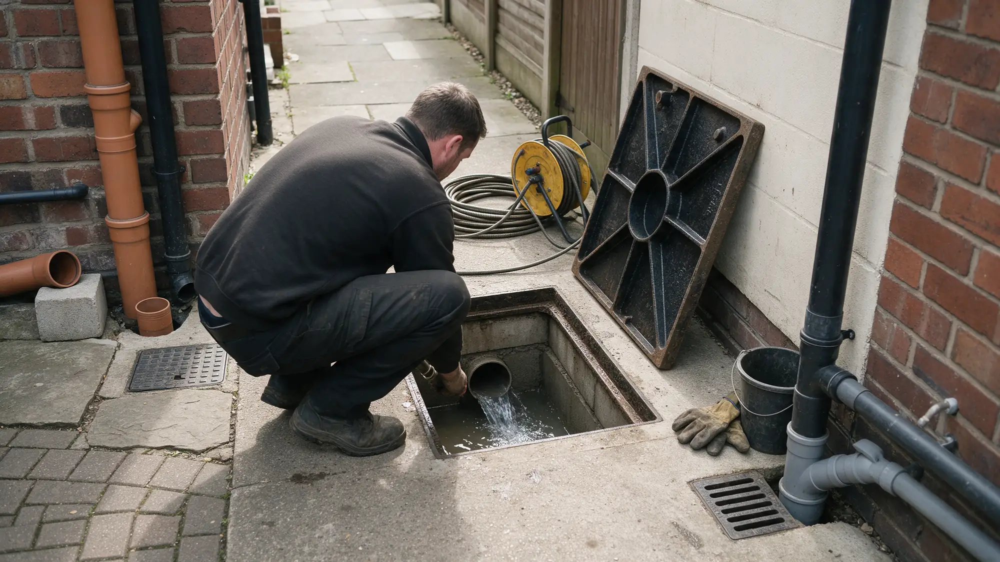
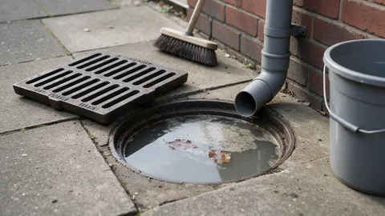
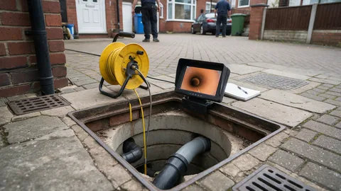
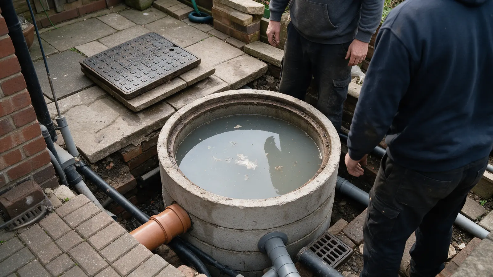
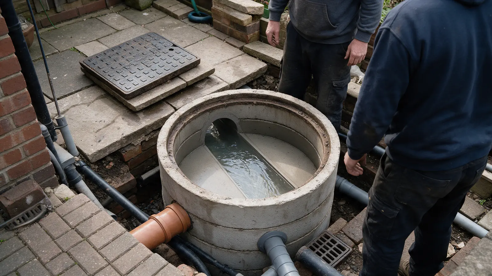
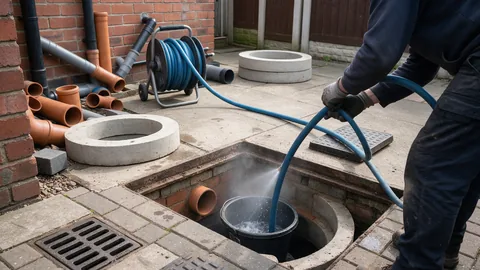
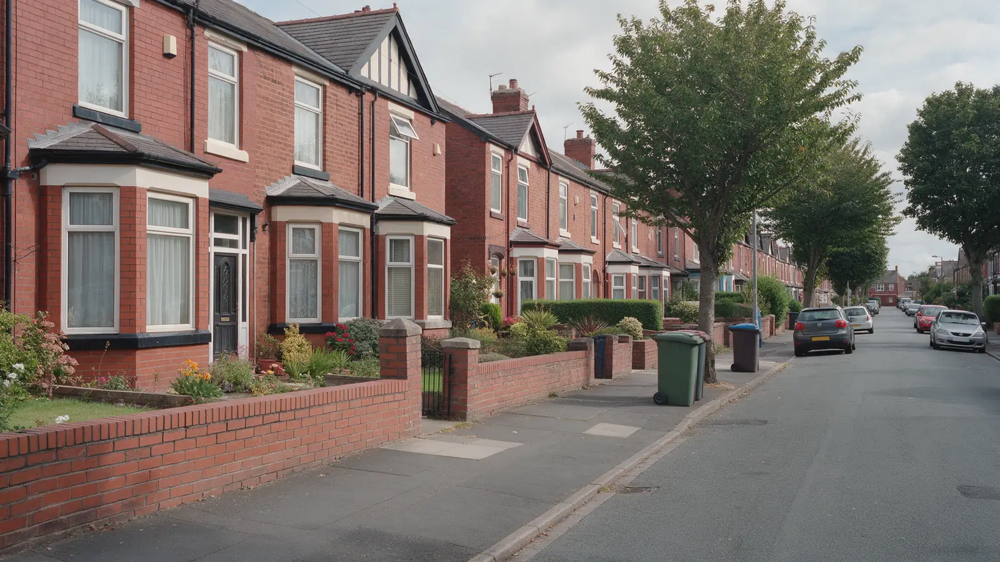

Drainage · Merseyside
We clear it.
Then we tell you why.
Blocked drains and toilets, camera surveys, repairs and relining, soakaways, gullies and septic tank pipework. Covers lifted, cause found, and a straight answer about whose drain it actually is.
What we do
Six kinds of job.

Generated photoBlocked drains and toilets
Rodded, jetted and running again, then a look down it to see what caused it. Most of what we pull out is wipes, fat or roots.

Generated photoDrain camera surveys
A camera down the run so you can see the inside of the pipe instead of guessing. Footage and a plain written report after.
 Generated photo
Generated photoDrain repairs and relining
Cracks, open joints and roots put right from inside the pipe where we can, with a patch or a liner cured in place.
 Generated photo
Generated photoSoakaways and land drainage
Rainwater taken away from the house and the lawn. We test what the ground actually does before anybody prices the dig.
 Generated photo
Generated photoGully and gutter outlet clearing
The silt out of the gully pot and the outlet flushed through, so the downpipe stops running down the wall.
 Generated photo
Generated photoSeptic tank and cesspit help
The drainage side of it: the runs in and out, the chambers and the condition of the pipework. Emptying is a tanker job.
How it works
Four steps, no mystery.
You tell us what it is doing
A call, the chat box or the form. Which sink, bath or toilet is slow, whether anything has come up outside, and your postcode.
We lift the covers and look
Every chamber on the run, from the house outwards, until we find the one that is full. That is where the blockage starts.
We clear it, then camera it
Rods to shift the plug, the jet to take the fat off the pipe wall behind it, then a camera so you can see what caused it.
You get a plain answer
Clear and nothing wrong, something worth fixing, or one for the water company. If it is a repair you get it in writing Sample.


Illustrative, not a real job. Both pictures were generated for this demo from the same chamber, one backed up and one running, to show what clearing a run actually looks like.
Before and after
A cover, and the truth under it.
Drag the slider. On the left, a chamber full to the frame, which is what a blocked run looks like from above. You cannot see the channel, you cannot see the inlets, and you cannot tell anything about the pipe.
On the right, the same chamber twenty minutes later. Now you can see the benching, both inlets and the channel, and now a camera has something to look at.
See the rest of the workOur work
Sample jobs.
12 jobs shown
 Generated photoRodded from the low endMaghull · sample
Generated photoRodded from the low endMaghull · sample
Generated photoJetted back to full boreSouthport · sample Generated photoToilet that would not go awayFormby · sampleGenerated photoCamera before anything elseSt Helens · sample
Generated photoToilet that would not go awayFormby · sampleGenerated photoCamera before anything elseSt Helens · sample Generated photoWhat came out of the pipeFormby · sample
Generated photoWhat came out of the pipeFormby · sample Generated photoHow it should lookPrescot · sampleGenerated photoPatch liner, no digSouthport · sample
Generated photoHow it should lookPrescot · sampleGenerated photoPatch liner, no digSouthport · sample Generated photoWhen it has to come upMaghull · sampleGenerated photoNew soakaway and land drainMaghull · sampleGenerated photoGully pot and outletSt Helens · sample
Generated photoWhen it has to come upMaghull · sampleGenerated photoNew soakaway and land drainMaghull · sampleGenerated photoGully pot and outletSt Helens · sampleEvery job here is a made up sample with a generated picture. Tap one to see it bigger.
Where we work
Across Merseyside.
Based in Merseyside Sample. These are the towns we cover most. Coverage is a sample for this demo. A bit outside it? Ask anyway, we often are.

Generated photoWhat people say
Sample reviews.
Sample review
Toilet backed up on a Sunday night. Whoever answered told me to stop flushing it, which I would never have thought of, and it was clear by Monday dinner.
Dawn, St Helens
Sample review
Third firm out to the same drain. First one to put a camera down it and tell me why it kept happening instead of just clearing it again.
Raj, Prescot
Sample review
Showed me the footage on a phone before anybody dug anything up, and in the end nothing got dug up at all.
Lesley, Formby
Sample review
Back garden was a swamp every winter. They dug a test hole first, then put a soakaway and a run of land drain in, and it has been dry since.
Gary, Maghull
Made up for this demo. Culvermill does not exist, so neither do its customers.
Questions
What people ask us first.
Who is responsible for my drain, me or the water company?
The general rule in England is that the pipes inside your boundary, serving only your property, are yours to look after. Once the run crosses the boundary, or once it is shared with a neighbour, it is normally the water company's.
That is the rule, and it is not the whole story. Older terraced streets are full of runs that serve four houses and were everybody's problem long before the rules changed. If there is any doubt about which side of the line your blockage sits on, we say so and point you at your local water company before you spend a penny with us. Plenty of jobs end with us lifting a cover, looking, and telling you to ring them instead.
What is a drain camera survey, and do I need one?
It is a camera on a push rod, or a crawler for a bigger pipe, that we feed along the run while we watch the picture. It shows cracks, open joints, roots, a belly where the fall has dropped, and whether the blockage had a cause worth fixing.
You do not need one for a one off blockage that clears and stays clear. You do want one if it keeps coming back, if you are buying the house, if a wall or a path is sinking near the run, or before anybody digs. Digging without a survey is how people end up with a hole in the wrong place.
Can you clear it today?
Often, yes, particularly if you ring early. We are not going to put a time in writing on a web page though, because it depends on what is already booked in and how far out you are.
What you will get is a straight answer on the phone, including when the honest answer is first thing tomorrow. We would rather tell you that than have you sat in waiting all afternoon.
Why does my drain keep blocking?
A drain that blocks once has had something put down it. A drain that blocks every few months has something wrong with it.
The usual causes are fat and grease setting on a rough joint, roots in through a cracked clay pipe, a belly in the run where the ground has settled and the fall has gone, and wipes catching on a lip and then catching everything else. Clearing it again and again treats the symptom. A camera tells you which of those it is, and then it is your call whether it is worth putting right.
Will you need to dig?
Not for most jobs. Clearing, jetting and surveying all happen through the chambers, so nothing comes up. A lot of repairs are done from inside the pipe too, with a patch or a liner cured in place.
We dig when the pipe has collapsed, or when it is so far out of shape that there is nothing sound left to line to. If it gets to that, you see the footage first so you can see why, and we put the path or the drive back afterwards.
General guidance written for this demo, not advice on your drain.
Advice
Worth reading first.
Generated photoIs it your drain or the water company's?
The question we get asked first, and the one that decides who pays. Here is the general rule and where it stops being simple.
Generated photoFive things that block drains, and how to stop them
Nearly everything we pull out of a drain is one of five things. Four of them you can do something about.
What a drain survey shows you
What a camera actually tells you, what the words on the report mean, and when a survey is money wasted.
About this demo
What this demo shows.
Culvermill is not a real firm. The site is here to show a drainage firm what Clockwork AI builds, in six parts.
No prices here. What it would cost for your firm is a conversation, not a web page. The Clockwork number is in the bar at the top.
Something slow, or something coming up?
Tell us which sink, bath or toilet it is and your postcode, and we will book someone in. If waste is coming up now, use the urgent line instead.